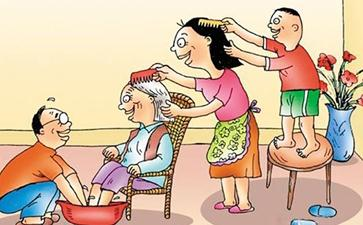

幼儿是要靠父母抚养的，否则就难免保育失当，老年是要靠子女奉养的，否则就萧条无趣。所以
子女敬养父母的五条：“一、供奉能使无乏。二、凡有所为，先白父母。三、父母所为、恭顺不逆。四、父母正令，不敢违背。五、不断父母所为正业。”
父母对待子女的五条：“一、制子不听为恶。二、指授示其善处。三、慈爱入骨澈髓。四、为子求善婚娶。五、随时供给所须。”
可知释尊教诲我们，是要父慈子孝的。
为什么要孝 石天基
顺从父母固然是对的，然而我们不要忽略了佛所说的“父母正令，不敢违背”和“不断父母所为正业”，这几句话的反面意思。就是父母倘有不正当的言语和举动，或是迷入外道邪见的，子女们不但不应该听从，而且要婉转地谏阻他们。但进谏时，要在没有旁人的时候。做子女的倘只晓得顺亲于情，而不晓得顺亲于理，结果使父母陷于不义，造成
悦亲是养亲第一要诀。使父母常生欢喜心，可以增进他们的
奉养父母，孝顺父母就使到了极点，也只是我们应该这样做的分内事，不可有一毫居功的念头。古德说得好：“孝莫辞劳，转眼便为人父母；善休望报，回头但看你儿孙。”这是最彻底的话。
古今来有很多颂扬亲恩的诗歌，真是至情流露，真挚动人。现在选录几首在下面：
亲恩歌 虞汝明
十月怀胎儿欲生，牙关紧闭眼睛昏。直从剪下胞衣后，再过三朝才是人。
撒得浑身尿屎来，爷娘忙把破衣揩。略无半点憎嫌意，洗涤勤劳日几回。
听得娇儿哭一声，翻身就把手来擎。只愁伸缩惊儿觉，自己何曾睡得成。
幸得儿生两岁龄，扶墙摸壁自能行。只愁跌破头和面，挂肚牵肠不放心。
六七龄时要读书，经营修脯费踌躇。现成茶饭朝朝奉，道是吾儿辛苦初。
孩提转眼已成人，食爱肥甘衣爱新。但愿吾儿知爱好，自身粗草也甘心。
如何容易得成人，费尽爷娘万苦辛。娶妇入门看习惯，暗添白发数茎新。
亲恩歌 孙念劬
岂不深知父母恩，
漫把钱财米谷论，此身亦是父娘身。如何毫发能私得，你是双亲什么人？
兄弟原同一树栽，专心供养莫相推。譬如孤子无兄弟，更向何人推卸来？
纵然牲鼎祭吾亲，不及生前菽水真。打驾来时陪笑面，庭帏欢喜一家春。
莫怪双亲说话烦，但须忍耐博亲欢。老人总为儿孙计，我到衰年也一般。
可晓双亲手内贫，要穿要用懒求人？莫因亲未分明说，做哑装聋不作声。
要一分时讨一分，谁人常有许多心。劝君六饭三茶外，还要供亲几两银。
戏采承欢自古闻，但求父母意欢欣。纵然体贴能周到，犹恐芳樽对夕曛。
谁人不具好心肠？贫苦人家孝益彰。但得吾亲能饱暖，自身冻饿又何妨。
不识亲恩看养儿，千辛万苦不推辞。试将受养亲儿意，爱养双亲到老时。
事亲之道，有物质的供养，和法味的供养。
怎样是物质的供养石天基居士说：“养亲条目约有四样：一是饮食，二是衣服，三是起居，四是疾病。
“饮食的事，为人子者，那个不欲竭力珍馐，罗列甘旨。若是个富贵人家，何难措办；若是家业淡泊的，便心有余而力不足了。要知古人说得好，菽水承欢，盖为贫贱者言也。就是家常的菜蔬，只要咸淡得宜，生熟中节，不敢潦草，然后敬奉，略有好食，先进父母；至于自己，粗粝俱不计较。要奉得父母欢喜，就是尽心。大约年老的人，脾胃自然虚薄，饮食难得消化，进的食物，须要炖得热的，软烂的，香美的，方才有益。凡是生冷粘腻坚实难化之物不可与食。食不可过饱。这饮食调理，为人子者，俱要放在心上！
“衣服的事，为人子者，那个不欲锦绣细软？但富贵人家便容易制造。若是寒俭之家，何能如意？只要冷暖合宜，奉得父母欢喜，就是尽心。大约年老的人，气血自然衰竭，身体未免不耐寒暑，未曾冷先就怕冷，未曾热先就怕热。冬月衣服内棉花，每年要换新的，去旧的。薄棉袄要做两件，秋冬来渐渐加添，春暖时渐渐减去，霜冷之月，若有煖阁轻裘，固是上等，如不能的就是布被布衣，只要温暖。至于晚间，宜将汤壶，放于被内。再如夏月夏衣，须要凉爽，凡有汗者，频频洗换。这衣服调理，为子者，俱要放在心上。
“起居的事，为人子者，须要时时照看。凡是江湖风浪，危桥险岸，绝早黑夜，雨雪霜雾，俱不可任父母轻往。凡是丧祭斗讼忧愁的事。俱不可任父母轻到。至于劳心费力的事，俱不可任父母去做。若遇欢乐安逸的事，不妨劝父母去行。再如父母性所喜好的好事，亦劝多为。其行住坐卧，俱要照管扶持。只要得父母安稳
“疾病的事，为人子者，须要加意调摄小心扶持，请名医用药。病中煎制汤药，进奉饮食，俱要自己亲为，不可尽委奴婢，切不可生一个
恩爱眷属，不过数十年罢了。这数十年的光阴，是很容易过去的。“风木生悲”谁也是免不了的啊！父子
世尊在
王日休居士说：“世间之孝，一世而止，犹为孝之小者。出世间之孝，无时而尽。以父母生净土，福寿不止，如恒河沙劫，此莫大之孝也。父母存，而不能以此劝勉，他日徒伤其心，徒为厚礼，亦何益乎？若又能转以化人，使更相劝化，以此功德，资父母之福寿，厚父母之善报，佛不阻众生之愿，此意必可遂矣。上品上生者，先言
王莲舫居士说：“儿子事亲，生求其安，死求其乐。”佛说：“死生无常，沉沦六趣。”亲求超脱，须仗佛力。为子者亲在之日，当劝亲念佛，即世安养。亲没之后，宜广行善事，劝修净业，资亲冥福，往生净土。庶先灵早得永久之安乐，而子心亦可稍慰于无憾，斯又孝之至矣。或谓奉佛救亲，未免以不肖之心待父母。不知父母有德，非仗佛力，难逢佛境。天福享尽，还应堕落。父母无德，不免沉沦，三途受苦，靠谁超拔？此孝子爱亲之心，所以不容已于怀也。”
亲与子的问题，限于篇幅不能尽量的殚述，我们只要记着：“要知亲恩，只看自己怎样养儿育女；要求子顺，必先自己做到孝顺爷娘。”这几句话就是了。